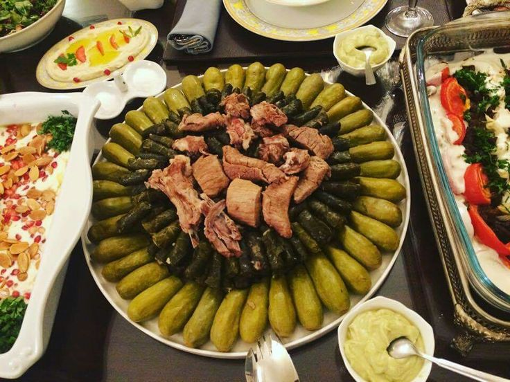

Mahashi

Description
As with many arabic dishes. the origin of this dish is a hot topic.
yet no tow people disagrre that it is one of the most tatsy ones
Ingredients
- Vegetables – zucchini, eggplant, bell peppers, or grape leaves.
- Filling – rice mixed with minced meat, onions, parsley, and spices.
- Tomato sauce – made with tomatoes, garlic, and seasoning
- Spices – salt, pepper, cinnamon, allspice
Steps
- Prepare the vegetables – hollow out zucchini, eggplants, or peppers
- Prepare the vegetables – hollow out zucchini, eggplants, or peppers
- Prepare the vegetables – hollow out zucchini, eggplants, or peppers
- Cook in tomato sauce – place stuffed veggies in a pot, cover with tomato sauce and simmer until rice is fully cooked.
Homepage